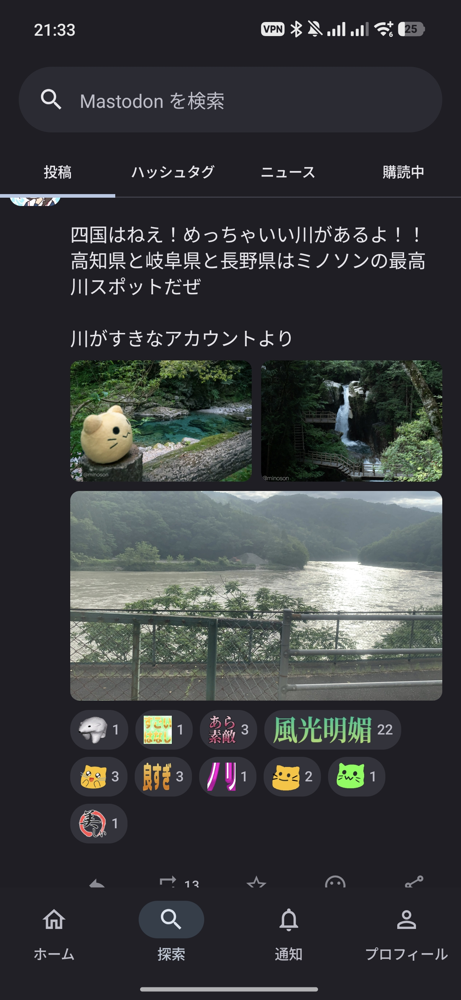
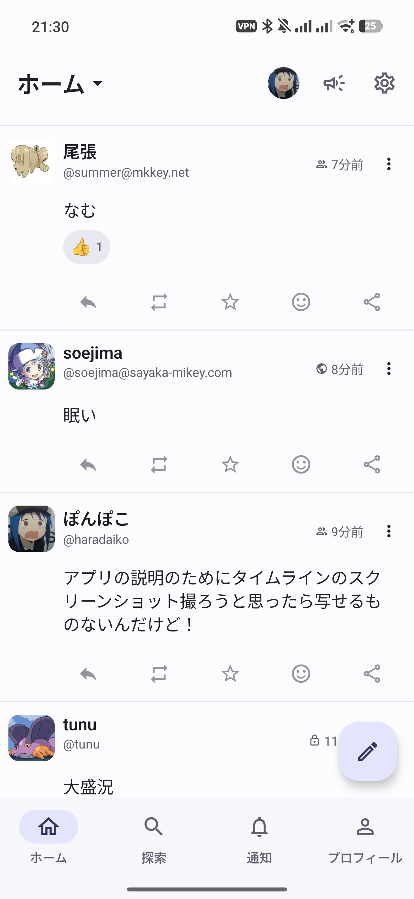
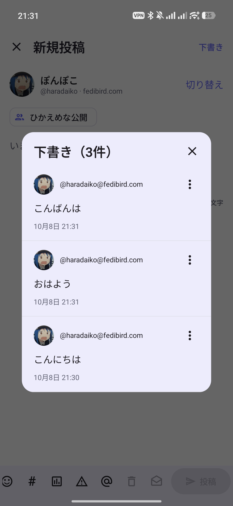

アカウントを切り替えて投稿
同じサーバーでも、異なるサーバーでも、複数のアカウントを登録できます。タイムラインや通知を見るアカウントを切り替えられ、投稿画面では閲覧中とは別のアカウントを投稿元に選べます。
公開範囲や内容警告の設定、画像・動画の添付、説明文の入力、投票の作成、カスタム絵文字の挿入にも対応しています。
Android向け · 非公式Mastodonクライアント
Nagisaはタイムラインを読みながらアカウントを切り替えて投稿できるアプリです。Fedibirdなどの対応サーバーではカスタム絵文字でリアクションを送れます。
投稿に付いたリアクションを長押しすると、反応した人の一覧を確認できます。リアクション通知にも対応しています。
利用できる機能はサーバーの対応状況によって異なります。

同じサーバーでも、異なるサーバーでも、複数のアカウントを登録できます。タイムラインや通知を見るアカウントを切り替えられ、投稿画面では閲覧中とは別のアカウントを投稿元に選べます。
公開範囲や内容警告の設定、画像・動画の添付、説明文の入力、投票の作成、カスタム絵文字の挿入にも対応しています。
画像を押すと拡大できます。

ホーム・ローカル・連合のタイムラインに対応しています。文字の大きさや行間、ライト・ダークテーマを選べます。投稿の操作ボタンも種類や並びを調整できます。
画面を拡大する
本文に加え、公開範囲、内容警告、添付、投票も保存します。投稿元のアカウントごとに下書きを一覧で確認し、呼び出して編集・投稿できます。
画面を拡大する画面は表示例です。サーバーや設定によって表示は異なります。
探索タブではトレンド投稿・ハッシュタグ・ニュースを確認できます。検索でアカウントや投稿、ハッシュタグを探したり、気になるタグを購読して一覧で確認したりできます。
設定の同期、通知、画像の扱い、フィルター、データの削除についてまとめています。
使い方を読む